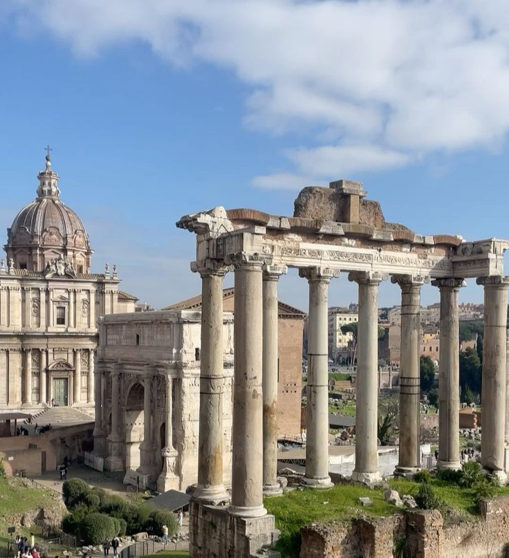
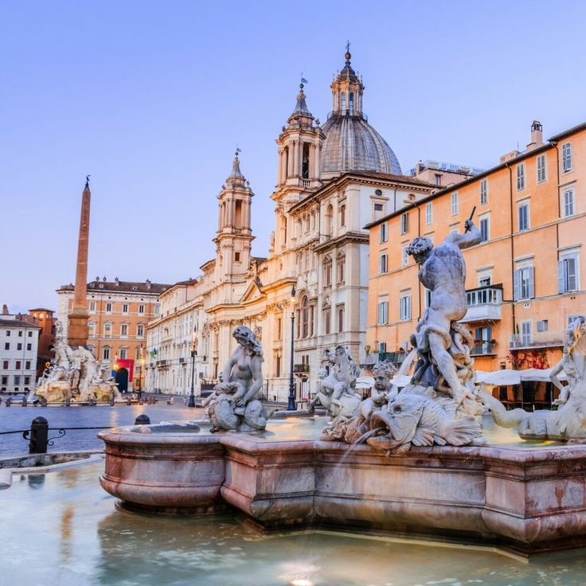

El itinerario
Nuestro día perfecto
Roma Termini
El bus de Rome Fiumicino Airport nos deja en Roma Termini a las 8h aprox. Desde aquí cogemos el metro línea B (dirección Laurentina) hasta la parada Colosseo — 4 paradas, ~10 min.
Aquí va nuestro sitio de desayuno
Un café y un cornetto cerca del hotel antes de empezar.
Coliseo, Foro
& Palatino
El mayor anfiteatro romano del mundo merece ser el primero del día: la madrugada lo deja libre de multitudes. El ticket combinado incluye el Foro Romano y el monte Palatino, así que sacamos el máximo partido. Pasamos al menos 45 min en el Coliseo, 45 min en el Foro y 30 min en el Palatino.
Foro Romano
& Monte Palatino
El corazón de la Roma antigua. Caminamos entre templos, arcos triunfales y la Vía Sacra. Subimos al Palatino para tener la mejor panorámica del Foro desde arriba. La app oficial gratuita nos da el contexto histórico de cada ruina.

Aquí va nuestro restaurante de comida
Cuando lo tengamos claro, rellenamos este hueco con el nombre y lo que pedimos.
Piazza Venezia
& Altare della Patria
El "pastel de bodas" de Roma. El Altare della Patria es gratuito y ofrece una terraza con las mejores vistas de la ciudad. Subimos al nivel superior (acceso gratuito) para una panorámica de 360° sobre los tejados romanos. Parada rápida pero imprescindible.

Piazza Navona
La plaza barroca más bella de Roma. La Fontana dei Cuatro Ríos de Bernini es la protagonista. Artistas callejeros, cafés con terraza y una atmósfera única a cualquier hora del día. Tomamos un café en una de las terrazas y contemplamos la fuente en calma.

El Panteón
El edificio antiguo mejor conservado del mundo. El óculo de 9 metros en la cúpula es pura magia arquitectónica. La audioguía (recomendada) nos revela los secretos de este prodigio de 2.000 años. El rayo de luz que entra por el óculo se mueve como un reloj de sol.
Café & Gelato · Por elegir
Pausa de café o gelato cerca del Panteón. Dos opciones clásicas: Sant'Eustachio il Caffè y Giolitti.
Fontana
di Trevi
La fuente más famosa del mundo aparece de golpe al doblar una esquina estrecha: ese primer impacto es emocionante. Tiramos una moneda con la mano derecha por encima del hombro izquierdo para asegurar el regreso a Roma. La tarifa de acceso al nivel inferior (2€) vale la pena para verla de cerca.
Piazza di Spagna
& Scalinata
La escalinata de Trinità dei Monti es el símbolo más fotogénico de Roma. Subimos los 135 escalones para ver el atardecer sobre los tejados. En junio el sol se pone tarde — hay luz perfecta a esta hora. En la base, la Fontana della Barcaccia de Bernini es perfecta para descansar los pies.

Plaza de San Pedro
& Basílica
En junio el sol no se pone hasta las 20:30 — llegamos con la luz dorada perfecta. La Plaza de San Pedro con la columnata de Bernini es uno de los espacios más imponentes del mundo. Vemos la fachada de la Basílica, la cúpula de Miguel Ángel y el obelisco desde fuera, todo gratis y sin aglomeraciones a esa hora. De camino pasamos por el Puente de los Ángeles junto al Castel Sant'Angelo, que queda de paso.
Aquí va nuestro restaurante de cena
Cuando lo tengamos decidido, rellenamos este hueco con el nombre y lo que pedimos.